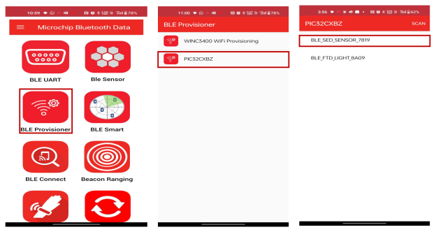
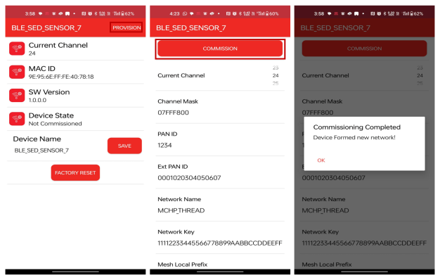
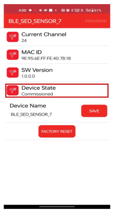

5.8 BLE Thread Sensor Provisioning SED Demo Application
This application demonstrates the multiprotocol functionality of the PIC32CXBZ2 family of devices and modules, which allows for the concurrent operation of both Thread and BLE stacks. Thread commissioning over BLE uses a Bluetooth Low Energy (BLE) link to exchange Thread network parameters and to run Thread and BLE tasks simultaneously under FreeRTOS. This application was developed using the BLE Provisioning component. For more details on project generation using BLE component, refer to the Project Generation with Component to use the component for application development.
Hardware Requirement
| Tool | Qty |
|---|---|
| WBZ451 Curiosity Board | 2 |
| Micro USB cable | 2 |
| Android/iOS Mobile | 1 |
Software Requirement
-
TeraTerm
-
Microchip Bluetooth Data (MBD) iOS/Android app available in Stores
Demo Description
FTD/SED Provisioning:
By connecting the device to the "BLE Provisioning" MBD feature, the Thread network of the combo device can be provisioned and connected to the existing Thread network , or it can create a new network (FTD) if there is no nearby network.
Sleepy End Device (SED) Send Temperature Data Periodically (Devices are Provisioned):
- The SED will periodically wake up and send temperature data to the FTD via Thread UDP.
- The temperature data will be displayed in the FTD application console.
Programming the Precompiled
.hex File/Application Example
- Combo FTD Light – One of the WBZ451 Curiosity Board is programmed with combo FTD light application which can act as Leader.
- Combo SED Sensor – Another WBZ451 Curiosity Board is programmed with combo SED sensor application which can act as Thread child.
Programming the .hex File Using MPLAB® IPE
-
Precompiled Hex files are located in below path in the FTD and SED folders respectively.
- Combo FTD Light – "<Harmony Content Path>\wireless_apps_pic32cxbz2_wbz45\apps\multiprotocol\ble_thread_prov_ftd_light\hex"
- Combo SED Light – "<Harmony Content Path>\wireless_apps_pic32cxbz2_wbz45\apps\multiprotocol\ble_thread_prov_sed_sensor\hex"
-
For more details on the steps, go to Programming A Device.
Note: Users must choose the correct Device and Tool information.
Programming the Application Using MPLAB® X IDE
-
Follow steps mentioned in the Running a Precompiled Example section
- Open and program the Application
Examples:
ble_thread_prov_ftd_light.X– Located in “<Harmony Content Path>\wireless_apps_pic32cxbz2_wbz45\apps\multiprotocol\ble_thread_prov_ftd_light\firmware” for FTD using MPLAB X IDEble_thread_prov_sed_sensor.X– Located in "<Harmony Content Path>\wireless_apps_pic32cxbz2_wbz45\apps\multiprotocol\ble_thread_prov_sed_sensor\firmware" for SED using MPLAB X IDE
For more details on how to find the Harmony Content Path, refer to Installing the MCC Plugin
On-Board Resource Usage For SEDFor FTD refer the link :- On-Board Resource Usage for FTD
| Sensor | Peripheral Used | I/O Pin | Comment |
|---|---|---|---|
| Switch | EXTINT0 | PB4 | SW1 button in curiosity board to wake up SED through button. |
| Temperature Sensor | ADC | PB6 | Read the room temperature from the MCP9700A sensor available in curiosity board |
| Timer | RTOS Systick Timer | — | Periodic timer functionality to initiate the sensor read operation and for Adv User LED control |
| User LED | GPIO | PB7 | User LED in curiosity board. To indicate BLE advertisement/connect status |
Demo Steps
- Supply power to the WBZ451 Curiosity Boards consisting of Combo FTD light and Combo SED sensor applications by connecting a USB cable. Power Supply (PS) “Green LED” will turn ON when connect to PC.
- The application activity is shown
in "Console Log" through on board UART-USB converter. Open Terminal (for
example, Tera Term) with the following settings.Terminal Settings
- Baud Rate/Speed – 115200 (as configured in SERCOM configuration)
- Parity – None
- Data Bits – 8
- Stop Bits – 1
- Flow Control – None
- Launch the MBD mobile application
- Click on BLE
Provisioning feature and select PIC32CXBZ2 to scan for the devices.
Figure 5-176. Scanning and Connecting SED Device  - The device name
"BLE_SED_SENSOR_XXXX" will be visible when scanned in the MBD mobile
application.Note: “XXXX” is a unique number associated with these combo devices
- Connect to the device and follow the screen shots below for the
commissioning procedure.
Figure 5-177. Provisioning SED Device  - The Blue "User LED" will be turned ON when device is connected to mobile app.
- If the network parameters are successfully provisioned, the device state can
be seen as “Commissioned”. The device will preserve the commissioned data,
and it will be used for commissioning from the next power cycle onwards. To
clear the commissioned data and provision new data, user has to perform a
“Factory Reset” from the “BLE provisioning” feature of the MBD application.
Figure 5-178. Device State  - When the device SED join as a child the following log, as illustrated in the following figure, will appear in the console.
Demo: SED Sends Temperature Data Periodically
Protocol Exchange
The communication protocol exchange between BLE Provisioner mobile app/ BLE sensor mobile app (BLE central) and the WBZ451 module (BLE peripheral) is explained in Protocol Exchange.